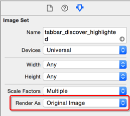

TabBar 拖拽到 Images.xcassets 目录下override func viewDidLoad() {
super.viewDidLoad()
addChildViewController()
}
/// 添加子控制器
private func addChildViewController() {
tabBar.tintColor = UIColor.orangeColor()
let vc = HomeTableViewController()
vc.title = "首页"
vc.tabBarItem.image = UIImage(named: "tabbar_home")
vc.tabBarItem.selectedImage = UIImage(named: "tabbar_home_highlighted")
let nav = UINavigationController(rootViewController: vc)
addChildViewController(nav)
}

类 名称print(vc)
小结
namespace.类名CFBundleExecutable从 mainBundle 的 infoDictionary 获取命名空间名称
print(NSBundle.mainBundle().infoDictionary)
let namespace = NSBundle.mainBundle().infoDictionary!["CFBundleExecutable"] as! String
let namespace = NSBundle.mainBundle().infoDictionary!["CFBundleExecutable"] as! String
let clsName = namespace + "." + vcName
let cls: AnyClass = NSClassFromString(clsName)!
let vc = cls.alloc() as! UITableViewController
标题和图像名参数/// 添加子控制器
///
/// :param: vcName 视图控制器名称
/// :param: title 标题
/// :param: imageName 图像名
private func addChildViewController(vcName: String, title: String, imageName: String) {
tabBar.tintColor = UIColor.orangeColor()
let namespace = NSBundle.mainBundle().infoDictionary!["CFBundleExecutable"] as! String
let clsName = namespace + "." + vcName
// 告诉编译器暂时就是AnyClass
let cls: AnyClass! = NSClassFromString(ns + "." + vcName)
// 告诉编译器真实类型是UIViewController
let vcCls = cls as! UIViewController.Type
// 实例化控制器
let vc = vcCls.init()
vc.title = title
vc.tabBarItem.image = UIImage(named: imageName)
vc.tabBarItem.selectedImage = UIImage(named: imageName + "_highlighted")
let nav = UINavigationController(rootViewController: vc)
addChildViewController(nav)
}
/// 添加所有子控制器
private func addChildViewControllers() {
addChildViewController("HomeTableViewController", title: "首页", imageName: "tabbar_home")
addChildViewController("MessageTableViewController", title: "消息", imageName: "tabbar_message_center")
addChildViewController("DiscoverTableViewController", title: "发现", imageName: "tabbar_discover")
addChildViewController("ProfileTableViewController", title: "我", imageName: "tabbar_profile")
}